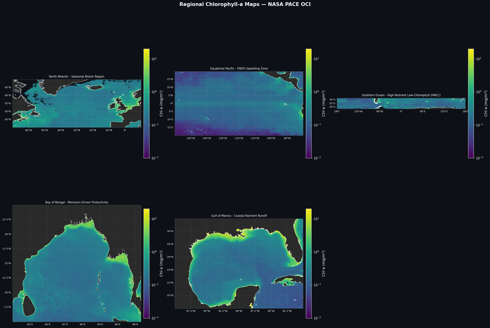
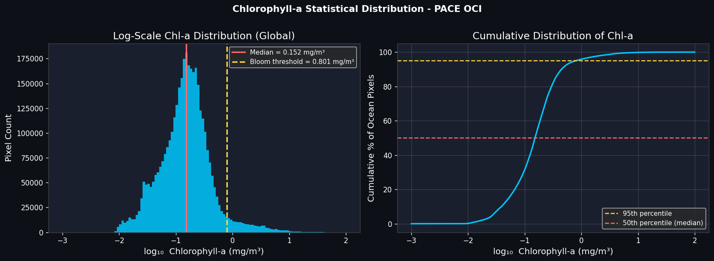
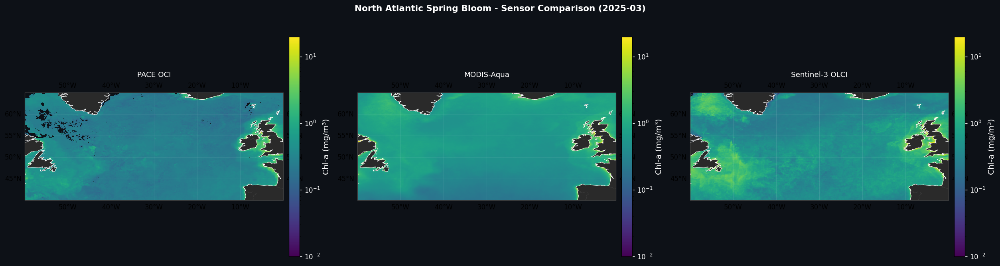
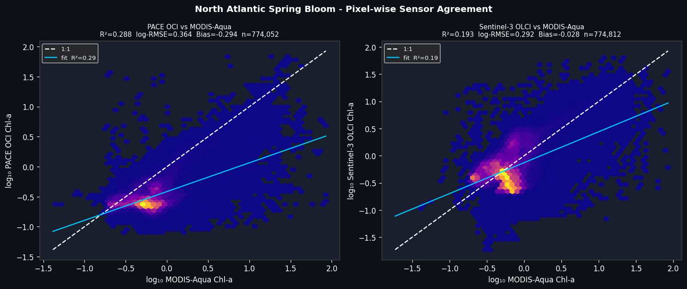
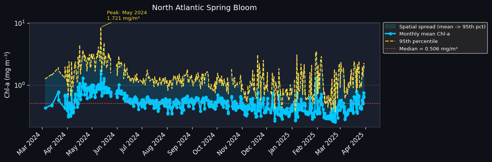
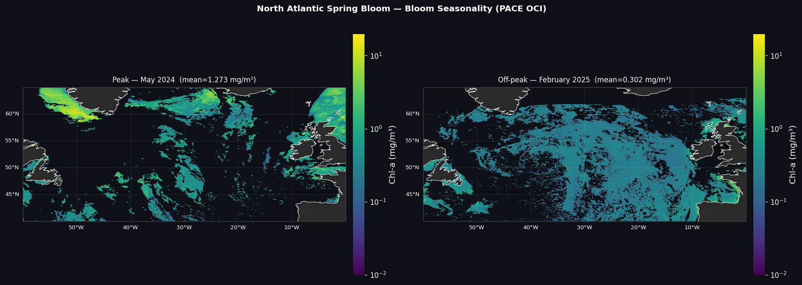

PACE Algal Bloom Analysis
Mapping chlorophyll-a from the PACE OCI sensor to explore global ocean productivity, compare algae products, and track temporal trends in phytoplankton.
PACE Ocean Productivity and Algal Bloom Detection
This project focuses on satellite based ocean color analysis and chlorophyll-a monitoring across global and regional ocean systems using NASA's PACE OCI instrument. The objective was to characterize spatial and temporal patterns in ocean productivity while evaluating how consistent PACE measurements are against established satellite sensors. Level 3 mapped chlorophyll-a data was accessed through NASA Earthdata and processed into global and regional composites spanning March 2024 through April 2025.
Regional subsets were extracted for five ecologically distinct systems, including the North Atlantic, equatorial Pacific, Southern Ocean, Bay of Bengal, and Gulf of Mexico, each shaped by a different physical or biological driver such as seasonal stratification, ENSO variability, or river nutrient runoff. Chlorophyll-a retrievals from PACE OCI were compared against MODIS-Aqua and Sentinel-3 OLCI, with sensor agreement evaluated using R-squared, RMSE, and bias, highlighting trade-offs in accuracy, spatial coverage, and consistency with long-running satellite records.
PACE OCI data was then used to track monthly productivity across all five regions, enabling direct comparison between peak and off-peak bloom months. A temporal analysis was conducted to quantify seasonal bloom dynamics, such as spring stratification blooms and monsoon-driven productivity, including estimates of regional mean and 95th-percentile chlorophyll-a concentrations. This project demonstrates the integration of satellite data processing, statistical analysis, and multi-sensor validation to address real-world ocean monitoring challenges.
Figure Gallery

Chlorophyll-a maps for five ecologically distinct regions: the North Atlantic, equatorial Pacific, Southern Ocean, Bay of Bengal, and Gulf of Mexico. Each region reflects a different productivity driver, from spring stratification to monsoon runoff to iron limitation.
Global distribution of chlorophyll-a values from PACE OCI, shown as a logarithmic histogram and cumulative distribution. The median of 0.152 mg/m³ and strong right skew confirm that most of the ocean is low productivity, with only the top 5% exceeding the bloom threshold of 0.801 mg/m³.
Side by side chlorophyll-a maps of the North Atlantic from PACE OCI, MODIS-Aqua, and Sentinel-3 OLCI for March 2025. Visual differences in coverage and intensity reflect each sensor's resolution, retrieval algorithm, and susceptibility to cloud masking.
Pixel level scatter comparison of PACE OCI and Sentinel-3 OLCI against MODIS-Aqua chlorophyll-a values across the North Atlantic. Higher R² and lower log-RMSE indicate stronger agreement, while the dashed 1:1 line marks perfect correspondence between sensors.
Monthly mean and 95th percentile chlorophyll-a for the North Atlantic from March 2024 to April 2025, with a peak of 1.721 mg/m³ in May 2024. The shaded spread between the mean and 95th percentile shows how spatially patchy bloom intensity was relative to the regional median of 0.506 mg/m³.
Peak versus off-peak chlorophyll-a maps for the North Atlantic, comparing May 2024 (mean = 1.273 mg/m³) against February 2025 (mean = 0.302 mg/m³). The contrast highlights the seasonal collapse in productivity as winter mixing suppresses the spring bloom.